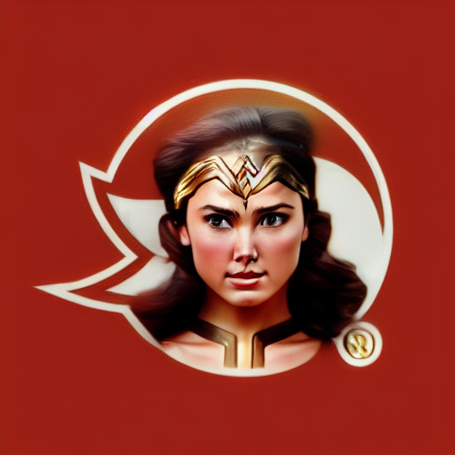
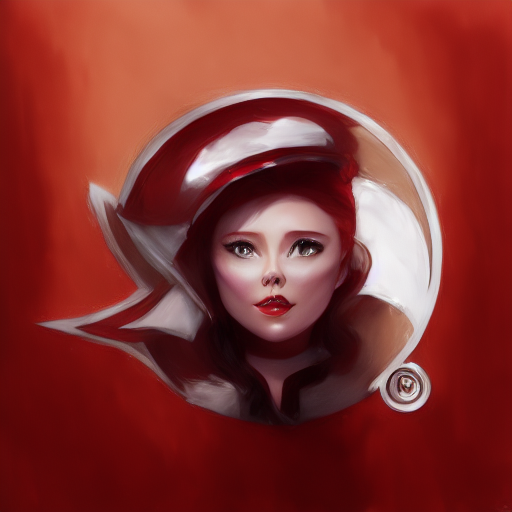
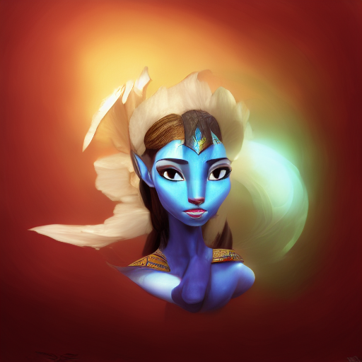
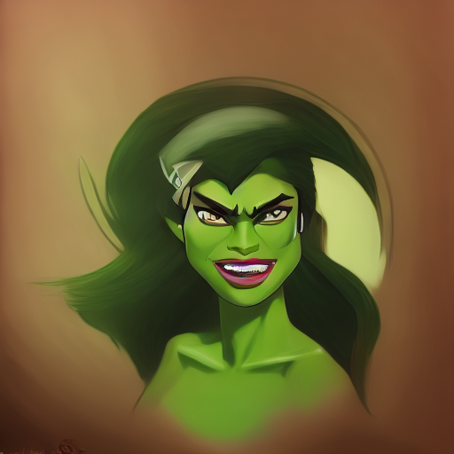
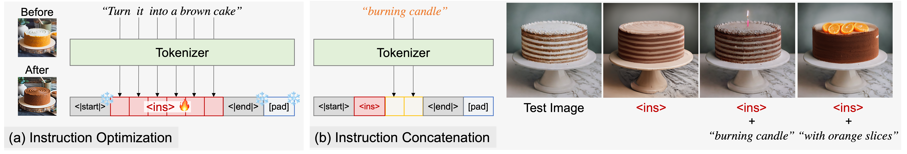

{kind=link}
E.g., describing how to transform the Starbucks logo into a "3D version". In this case, a visual prompt is more efficient than a text prompt.
Before: |
After: |
🧚 Inspired by this reddit, we tested Visii + InstructPix2Pix with Starbucks and Gandour logos. | ||||
Test: |
<ins> + "Wonder Woman"  |
<ins> + "Scarlet Witch"  |
<ins> + "Daenerys Targaryen" |
<ins> + "Neytiri in Avatar"  |
<ins> + "She-Hulk"  |
<ins> + "Maleficent" |
How does it work?
Given an example before-and-after image pair, we optimize the latent text instruction that converts the “before” image to the “after” image using a frozen image editing diffusion model, e.g., InstructPix2Pix.
Hybrid instruction
We only optimize a fixed number of tokens, so we have the flexibility to concatenate additional information to the learned instruction during inference. Users can input extra information to combine or guide the learned instruction according to their preferences.|  | |
| Instruction Optimization: We optimize instruction embedding ‹ins›. | Instruction Concatenation: During test time, we can add extra information into the learned instruction ‹ins› to further guide the edit. |
 We can concatenate extra information into the learned instruction ‹ins› to navigate the edit. This allows us to achieve more fine-grained control over the resulting images.
We can concatenate extra information into the learned instruction ‹ins› to navigate the edit. This allows us to achieve more fine-grained control over the resulting images.
Citation
@inproceedings{nguyen2023visual,
title={Visual Instruction Inversion: Image Editing via Visual Prompting},
author={Nguyen, Thao and Li, Yuheng and Ojha, Utkarsh and Lee, Yong Jae},
booktitle={Thirty-seventh Conference on Neural Information Processing Systems},
year={2023},
url={https://openreview.net/forum?id=l9BsCh8ikK}
}
title={Visual Instruction Inversion: Image Editing via Visual Prompting},
author={Nguyen, Thao and Li, Yuheng and Ojha, Utkarsh and Lee, Yong Jae},
booktitle={Thirty-seventh Conference on Neural Information Processing Systems},
year={2023},
url={https://openreview.net/forum?id=l9BsCh8ikK}
}
This website template is adopted from DreamFusion and Imagic, source code can be found here and here. Photo credit: Bo the Shiba. Thank you!
(.❛ ᴗ ❛.).